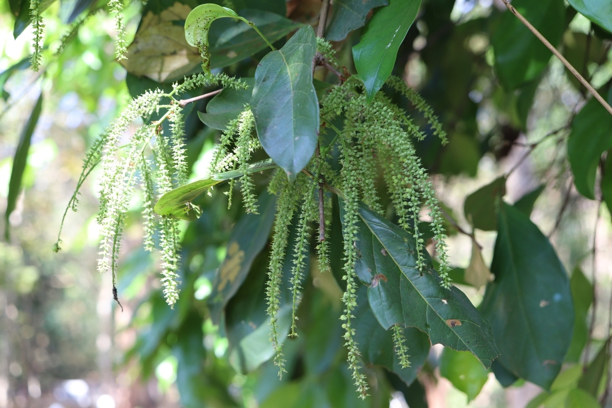

Crypteroniaceae
Crypteronia Family
Crypteroniaceae is a small family of evergreen trees and shrubs belonging to the order Myrtales, native to tropical rainforests in Southeast Asia and Malesia. They are characterized by opposite, simple, entire leaves, often leathery, with small interpetiolar stipules or ridges at the nodes. Flowers are small, 4- or 5-merous, often apetalous (lacking petals), borne in spikes, racemes or panicles. Ovary position varies from superior to inferior within the family. The fruit is typically a small capsule. These plants are often noted as aluminum accumulators.
Overview
Crypteroniaceae is a small family within the large order Myrtales (part of the Malvid clade of Rosids). It contains only three genera (Axinandra, Crypteronia, Dactylocladus) and about 10-12 species in total. The family has a restricted distribution, confined to tropical forests in Southeast Asia and Malesia, ranging from Indochina through the Malay Peninsula, Borneo, the Philippines, Sulawesi, to New Guinea. They are not found in the Americas, Africa, or Australia, and thus have no native relevance to Oklahoma.
Members are evergreen trees or large shrubs, often found in lowland or montane rainforests, and sometimes specifically in peat swamp forests (Dactylocladus). Vegetatively, they are recognized by their opposite, simple leaves which usually have entire margins and are often leathery. A key detail is the presence of small interpetiolar stipules or connecting ridges at the nodes. Flowers are typically small and inconspicuous, arranged in spikes, racemes, or panicles. They are 4- or 5-merous, often lack petals (apetalous), and have a variable ovary position (superior to inferior, depending on the genus). The fruit is generally a small, leathery or woody capsule containing few to many small seeds, which are sometimes winged.
Ecologically, Crypteroniaceae are known for their ability to accumulate high concentrations of aluminum from the soil. The family has limited economic importance, although some species may be used locally for timber. Its primary significance is botanical, representing a distinct lineage within the Myrtales order, closely related to other specialized tropical and Southern Hemisphere families.
Quick Facts
- Scientific Name: Crypteroniaceae A.DC.
- Common Name: Crypteronia family (no established English common name)
- Number of Genera: 3 (Axinandra, Crypteronia, Dactylocladus)
- Number of Species: Approximately 10-12
- Distribution: Tropical SE Asia and Malesia (Indochina to New Guinea).
- Evolutionary Group: Eudicots - Rosids (Malvids / Eurosids II) - Order Myrtales
Key Characteristics
Growth Form and Habit
Evergreen trees or large shrubs. Known to be aluminum accumulators.
Leaves
Leaves are arranged oppositely on the stem. They are simple, usually petiolate or subsessile, typically leathery (coriaceous) in texture, and have entire margins. Venation is pinnate. Small gland dots may be present on the leaf surface or margin. Small, often triangular, interpetiolar stipules (connecting the bases of opposite petioles) or stipules reduced to a transverse ridge across the node are characteristic, although they are often deciduous, leaving a scar.
Inflorescence
Inflorescences are usually axillary or terminal, typically elongated spikes, racemes, or branched panicles, often bearing numerous small flowers. Bracts are usually small and inconspicuous.
Flowers
Flowers are small (often < 5 mm), inconspicuous, actinomorphic (radially symmetrical), and usually bisexual (perfect), although sometimes unisexual (plants then dioecious). Flowers are typically 4- or 5-merous and perigynous to epigynous, possessing a short cup-shaped or tubular hypanthium.
- Calyx: Consists of 4 or 5 small sepals (calyx lobes) borne on the hypanthium rim, often triangular, persistent in fruit. Valvate or imbricate in bud.
- Corolla: Petals number 4 or 5 when present, are free, small, inserted on the hypanthium rim. However, petals are frequently absent (apetalous), especially in the genus Crypteronia.
- Androecium: Stamens usually equal in number to the sepals (4 or 5) and alternating with them (haplostemonous), or sometimes twice the number (8 or 10, diplostemonous). They are inserted on the hypanthium rim or on an inconspicuous disk within it. Filaments are short; anthers are small, basifixed or dorsifixed, opening via longitudinal slits.
- Gynoecium: Ovary position is variable within the family: it can be superior (in Axinandra) or partly to fully inferior (in Crypteronia and Dactylocladus), often fused to the hypanthium. It is composed of 2 to 5 (or 6) fused carpels, forming a syncarpous ovary with 2 to 5 (or 6) locules. Placentation is usually axile, with few to numerous ovules per locule. A single, simple style arises terminally, topped by a small capitate or slightly lobed stigma.
Fruits and Seeds
The fruit is typically a small, leathery or woody loculicidal capsule, meaning it splits open along the dorsal suture of each locule. The capsule is usually 2- to 5-valved and crowned by the persistent calyx lobes and style. It contains few to numerous small seeds. Seeds are sometimes flattened or winged (Dactylocladus, Axinandra). Endosperm may be present or absent; the embryo is straight.
Chemical Characteristics
Known for accumulating high levels of aluminum. Also contain ellagitannins and triterpenes. The presence of aluminum can sometimes influence soil properties or plant interactions in their native habitats.
Field Identification
Identifying Crypteroniaceae in its native range relies on recognizing the tree/shrub habit combined with opposite entire leaves bearing interpetiolar stipules/ridges, small flowers (often apetalous) in spikes/panicles, and the capsular fruit.
Primary Identification Features
- Habit: Evergreen tree or large shrub.
- Opposite, Simple, Entire Leaves: Often leathery texture.
- Interpetiolar Stipules or Ridge: Look for small stipules or a line connecting the petiole bases across the node (scars may remain if stipules deciduous).
- Small Flowers in Spikes/Racemes/Panicles: Inflorescences often elongated with numerous tiny flowers.
- Often Apetalous: Petals frequently absent (Crypteronia) or very small.
- Ovary Superior or Inferior: Position varies by genus.
- Fruit a Small Capsule: Typically 2-5 valved, crowned by persistent calyx.
- Distribution: Restricted to tropical SE Asia and Malesia.
Secondary Identification Features
- Flowers 4- or 5-merous.
- Stamens usually 4-5 or 8-10.
- Often aluminum accumulators (not a field character).
- Found in rainforest or swamp forest habitats.
Seasonal Identification Tips
- Year-Round: Evergreen leaves with opposite arrangement and interpetiolar stipule scars are constant vegetative clues.
- Flowering/Fruiting: Occurs seasonally within the tropics. Look for the characteristic inflorescences of small flowers or the persistent small capsules.
Common Confusion Points
- Rubiaceae: Abundant in the same regions, also have opposite leaves and interpetiolar stipules. Distinguished by Rubiaceae typically having conspicuous flowers with fused petals (sympetalous), consistently inferior ovaries, and often different fruit types (berries, drupes, different capsules).
- Melastomataceae: Related family in Myrtales, often opposite leaves. Distinguished by usually having characteristic acrodromous leaf venation (3-9 main veins curving from base), often showy flowers with unique stamens, and typically lacking interpetiolar stipules.
- Rhizophoraceae (Mangroves & relatives): Also in Myrtales, often opposite leaves with interpetiolar stipules (but usually larger and enclosing the bud, leaving prominent scars). Differ in habitat (mangroves/coastal for many), flower structure (usually petals present), and fruit type (often viviparous or leathery berry/drupe).
- Other opposite-leaved tropical trees/shrubs need careful checking of stipule type/presence, flower details (petal presence, ovary position, stamen number), and fruit type (capsule specific here).
Field Guide Quick Reference
Look For:
- SE Asian / Malesian Tree or Shrub
- Opposite simple, entire leaves
- Interpetiolar stipules or ridge/scar
- Small 4-5 merous flowers
- Flowers often Apetalous
- Flowers in Spikes/Racemes/Panicles
- Ovary Superior OR Inferior
- Fruit a small Capsule
- Aluminum accumulator
Key Variations (Between Genera):
- Ovary Position (Superior vs. Inferior)
- Petals Present (Axinandra) vs. Absent (Crypteronia)
- Stamen Number (4-5 vs. 8-10?)
- Seed structure (Winged vs. Unwinged)
- Habitat (Rainforest vs. Peat Swamp)
Notable Examples
The three genera of Crypteroniaceae are found in the rainforests of Southeast Asia and Malesia.

Crypteronia species (e.g., C. paniculata)
Crypteronia
The largest genus (~5 species), consisting of trees found from Indochina to Malesia. Characterized by opposite, simple, entire leaves with interpetiolar stipules/ridges. Flowers are small, typically 4- or 5-merous and apetalous (lacking petals), borne in dense spikes or panicles. The ovary is partly to fully inferior. Fruit is a small capsule.

Axinandra species
Axinandra
A genus of about 3 species of trees found in Sri Lanka, Borneo, and the Malay Peninsula. They have opposite, simple, entire leaves with interpetiolar stipules. Unlike Crypteronia, their small 5-merous flowers possess small petals and typically 10 stamens (perhaps 5 fertile + 5 staminodes). The ovary is superior. Fruit is a capsule, possibly with winged seeds.

Dactylocladus stenostachys
Dactylocladus
A monotypic genus forming large trees characteristic of peat swamp forests in Borneo. Leaves are opposite, simple, entire with interpetiolar stipules/ridges. Flowers are small, 5-merous, apetalous, with 5 stamens, borne in spikes or racemes. The ovary is inferior. Fruit is a capsule containing winged seeds.
Phylogeny and Classification
Crypteroniaceae is placed within the large order Myrtales, belonging to the Malvid clade of Rosids. This order includes major families like Myrtaceae, Lythraceae, Onagraceae, Combretaceae, and Melastomataceae.
Molecular phylogenetic studies have revealed a close relationship between Crypteroniaceae and several small, mostly Southern Hemisphere or specialized families also known for aluminum accumulation. These include Penaeaceae (primarily South African fynbos shrubs), Oliniaceae (African trees/shrubs), Rhynchocalycaceae (monotypic South African tree), and Alzateaceae (monotypic Neotropical tree/shrub). This group (sometimes informally called the "PORC + Alzateaceae" clade - Penaeaceae, Oliniaceae, Rhynchocalycaceae, Crypteroniaceae + Alzateaceae) often forms a clade that is related to, or sometimes nested within, the large family Melastomataceae (including Memecylaceae). The exact relationships among these families are still being refined but their connection within Myrtales is well-established.
Position in Plant Phylogeny
- Kingdom: Plantae
- Clade: Angiosperms (Flowering plants)
- Clade: Eudicots
- Clade: Rosids (Malvids / Eurosids II)
- Order: Myrtales
- Family: Crypteroniaceae
- (Phylogenetic Position: Within Myrtales, related to Penaeaceae, Oliniaceae, Alzateaceae, Melastomataceae clade)
Evolutionary Significance
Crypteroniaceae provides insights into the diversification of the Myrtales order:
- Biogeography: Its SE Asian/Malesian distribution, when considered alongside its relatives primarily in Africa and the Neotropics (Alzateaceae), contributes to understanding the complex historical biogeography of Myrtales, potentially involving Gondwanan origins or Tertiary dispersals.
- Morphological Variation: Shows notable variation in key traits like ovary position (superior vs. inferior) and petal presence/absence within a small, closely related group of genera.
- Ecological Specialization: Includes species adapted to specific tropical habitats like peat swamp forests (Dactylocladus). The trait of aluminum accumulation is shared with several related families and suggests adaptation to certain soil types.
- Myrtales Phylogeny: Helps resolve relationships within a specific clade of Myrtales characterized by aluminum accumulation and often Southern Hemisphere or specialized tropical distributions.